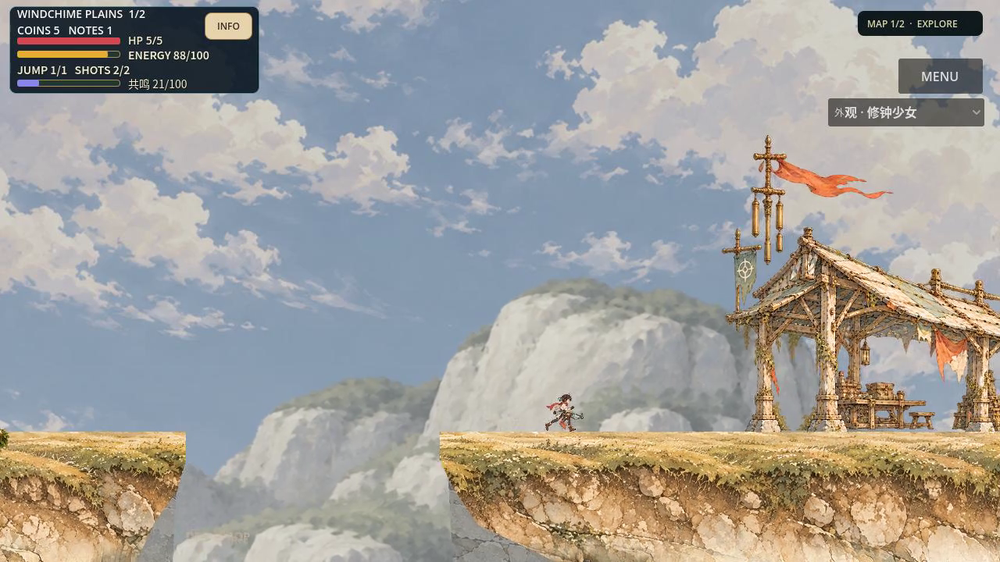
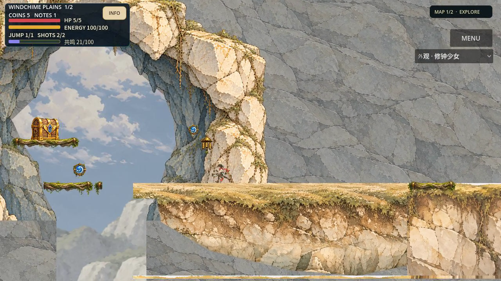
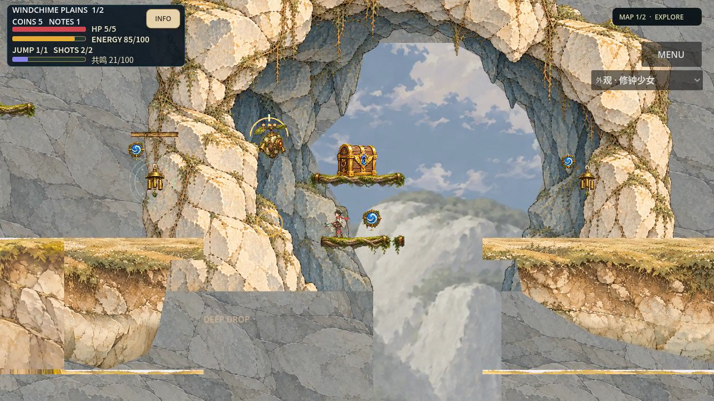
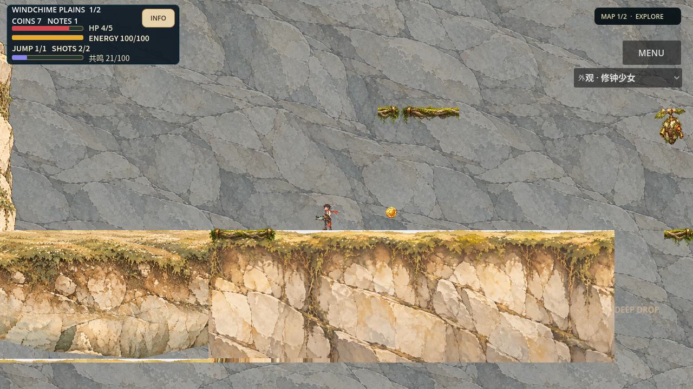

Seed joint-recoil-01，1280×720正常游戏相机。旧源3188a5a0，新源2c615d3d。P1仍为候选；本页不授艺术黄金、用户或整区准入。同Seed/原动作规则，实际轨迹和电影帧有一帧级差异，未做像素注册。没有裁切、重绘或滤镜。




75.583秒/60FPS，4530实际物理帧、8段路线、13枪、零回退。软件录制耗时333.353秒，不能签设备帧率；音轨存在不等于已经听音。最终独审 · 实际生产根因 · 运行与恢复